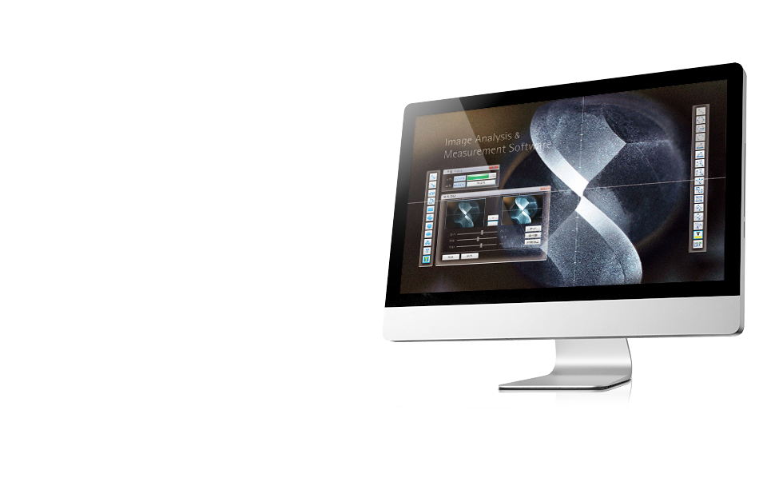
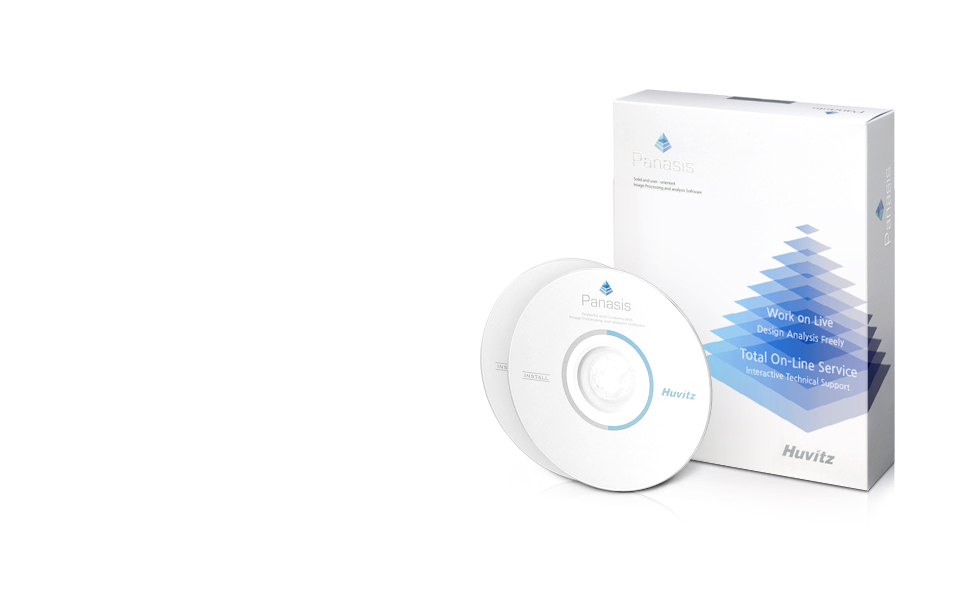
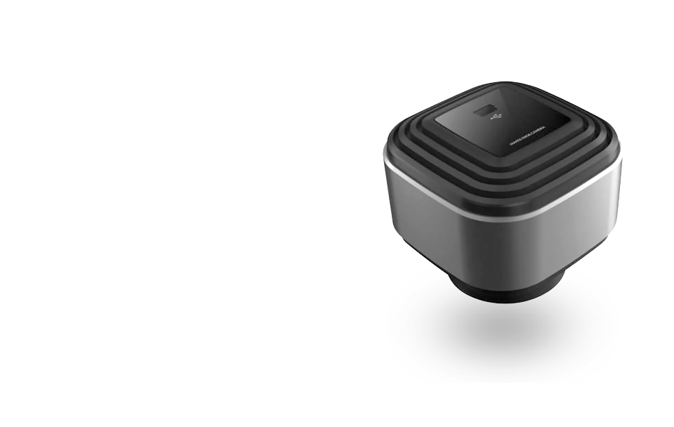

Imaging Solution
휴비츠의 Image Processing기술로 개발된 Panasis는 사용자 환경에 적합하도록
안정성과 편의성을 갖춘 새로운 Measurement & Analysis Software입니다
사용자 중심의 UI, 뛰어난 영상처리 능력,다양한 측정 툴과 함께
빠른 영상처리로 업무의 효율성을 높였습니다.
- 
- 
- 


제품소개
3-Way Solution
- 다양한 카메라지원
- Live Measure
- 측정 Result 및 Statistics
- Live Multi-Focus(ST버전)
- Live Tiling(ST버전)
- 3D Profiler(Option)
- LUSIS
- 3-Way Solution
- 1.Automatic Alarm:영상장치 연결에 문제발생시 경고. 2.One Push Recovery: 설정값을 하나의 버튼으로 백업과 복구
3.원격A/S:Network를 통한 신속한 A/S
- 다양한 카메라지원
- 다양한 영상 입력장치로부터 실시간 영상획득과 이미지저장이 가능한 호환성 높은 소프트웨어입니다.
(WDM, TWAIN Source의 다양한 영상입력 Format지원)
- Live Measure
- Live영상 상태에서 측정 및 분석을 가능하게 함으로써 보다 빠르고 쉽게 작업 및 측정 신뢰도를 높여줍니다.
- 측정 Result 및 Statistics
- 길이, 반경, 각도등의 측정 및 샘플의 최소, 최대, 평균 등의 통계 값을 쉽게 산출 할 수 있습니다.
- Live Multi-Focus(ST버전)
- Z축으로 포커스를 이동하여 초점심도가 다른 이미지를 실시간으로 합성 처리하는 기능으로 보다 빠르고 쉽게 만들 수 있습니다.
- Live Tiling(ST버전)
- 샘플이 놓여진 스테이지를 X-Y방향으로 이동하여 실시간 이미지 합성하여 전체 이미지를 보다 빠르고 쉽게 만들 수 있습니다.
- 3D Profiler(Option)
-
자사 고유의 알고리즘을 이용해 Topographic이미지 산출 및 3D Profile의 Data산출과 Z축 측정,분석 기능입니다.
(별도의 Z-axial 전동 Module Setup시)
- LUSIS
- 현미경분야에 적합한 성능을 가지고 사용편의성과 선명한 이미지를 제공하는 디지털카메라입니다.
제품사양
Specifications
| Basic | Standard | ||
|---|---|---|---|
| Acquistion | Camera support (includes WDM, TWAIN) |
● | ● |
| Movie Record | ● | ● | |
| Time Lapse | ● | ||
| View | Surface Viewer | ● | |
| Measurement | Live Measurement | ● | ● |
| Measurement | ● | ● | |
| Measurement ST | ● | ||
| Data Collection | ● | ● | |
| Data Collection ST | ● | ||
| Auto Trace | ● | ||
| Processing | Filter, Morphology | ● | ● |
| Image Enhancement | ● | ● | |
| Geometric Transform | ● | ● | |
| Channel Split & Merge | ● | ||
| Image Synthesis | Multi-Focus | ● | ● |
| Live MultiFocus | ● | ||
| Tiling | ● | ● | |
| Live Tiling | ● | ||
| HDR | ● | ||
| Report | Excel Template | ● | ● |
| Network A/S | ● | ● | |
Option
| Basic | Standard | |
|---|---|---|
| Data Base | ● | ● |
| Macro | ● | ● |
| Microscope Control | ● | ● |
| 3D Profiler | ● | ● |
시스템 요구사항
| 최소사양 | IBM호환 기종/Pentium 4-2GHz/512MB or more RAM |
|---|---|
| 권장사양 | Pentium 4 Dual core/1 GB or more RAM |
| NVIDA GeForce8400 | |
| OS | Microsoft Windows(2000, XP, Vista, 7) |
상기 제품의 디자인과 세부 사항은 기능 향상을 위해 사전 예고없이 변경될 수 있습니다.
| MODEL | CCD | CMOS | ||
|---|---|---|---|---|
| HC-13CU | HC-20CU | HC-30MU | HC-50MU | |
| Image Sensor | Sony IT CCD 1/2" | Sony IT CCD 1/1.8" | MICRON CMOS 1/2" | MICRON CMOS 1/2.5" |
| Pixel Size | 4.65um x 4.65um | 4.4um x 4.4um | 2.2um x 2.2um | 2.2um x 2.2um |
| Resolution | 1280 x 1024 | 1600 x 1200 | 2048 x 1536 | 2592 x 1944 |
| FPS | 15 Fps | 12 Fps | 10 Fps | 6 Fps |
| Interface / Connector | USB 2.0 / Mini-USB(USB 2.0 500mA의 전원공급 필요) | |||
| Lens Mount | C Mount | |||
| Dimensions / Weight | 699.3*699.3*695(W*D*H) / 250g | |||